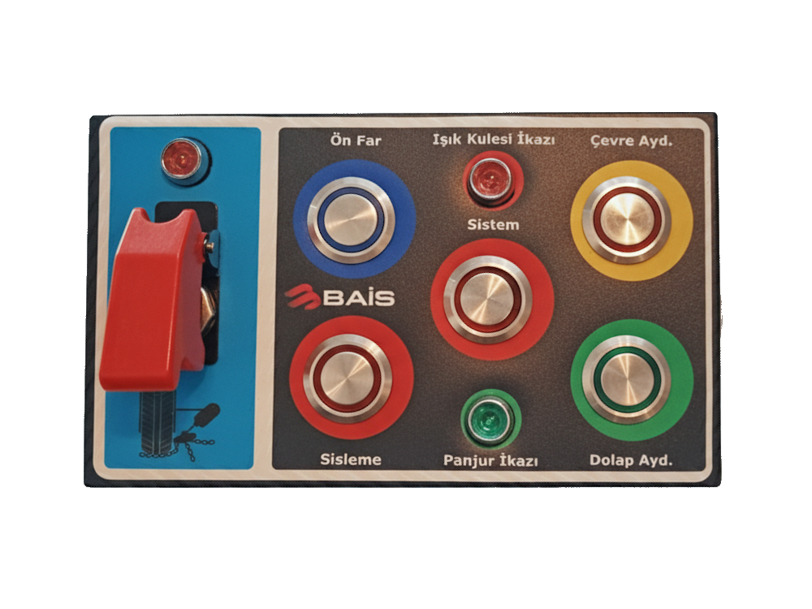

1
ZİNCİR SERME SİSTEMİ AKTİF LAMBASI.
2
ARAÇ DIŞINDAKİ PROJEKTÖRÜ AÇMA – KAPATMA.
3
IŞIK KULESİ AÇIK İKAZ LAMBASI.
4
ARAÇ DIŞI ÇEVRE AYDINLATMA AÇMA – KAPATMA.
5
SİSTEM TUŞU AÇMA – KAPATMA.
6
ZİNCİR SERME SİSTEMİ AÇMA - KAPATMA.
7
SİSLEME AÇMA - KAPATMA.
8
DOLAP KAPAĞI (PANJUR) AÇIK İKAZI LAMBASI.
9
PANJUR İÇİ AYDINLATMA AÇMA – KAPATMA.
Araç İçi Panel Açıklamaları
1
ZİNCİR SERME SİSTEMİ AKTİF LAMBASI.
2
ARAÇ DIŞINDA BULUNAN PROJEKTÖRÜ AÇAR KAPATIR.
3
ARAÇ DIŞINDA BULUNAN IŞIK KULESİ AÇIK KONUMDA OLURSA YADA KULE TAM OLARAK KAPANMAMIŞSA KIRMIZI IŞIK YANAR.
4
ARAÇ ETRAFINDA BULUNAN ÇEVRE AYDINLATMA LAMBALARINI YAKAR.
5
SU POMPASINA GİDEN ELEKTRİĞİ KONTROL EDER EĞER TUŞ KAPALI OLURSA POMPA ÜZERİNDEKİ HİÇBİR FONKSİYON ÇALIŞMAZ.
6
KIŞIN KAR YADA DON TEHLİKESİ OLDUĞU ZAMAN LASTİKLERİN KAYMASINI ENGELLEMEK İÇİN HAREKET HALİNDEYKEN LASTİĞİN ALTINA OTOMATİK ZİNCİR SEREN SİSTEMDİR. NOT: BU SİSTEM HAREKET HALİNDEYKEN KULLANILMALI, ARAÇ HAREKET ETMİYORKEN BU SİSTEM DEVREYE ALINMAMALI YADA DEVREDEN ÇIKARILMAMALIDIR. BU SİSTEM AKTİFKEN YÜKSEK HIZLARA ÇIKMAYINIZ!
7
ARAÇ LASTİĞİ ÜZERİNDE BULUNAN NOZULLARI AÇARAK LASTİĞE SU SIKAR BU SAYEDE YANGINDAN DOLAYI ISINAN LASTİKLER SOĞUTULUR.
8
PANJURLARDAN HERHANGİ BİRİ AÇIK KALIRSA VEYA TAM KAPANMAZSA YEŞİL IŞIK YANAR. 9 NUMARALI BUTON AKTİF OLMAZSA LAMBA UYARI VERMEZ.
9
DOLAP İÇİ AYDINLATMALARI YAKAR.